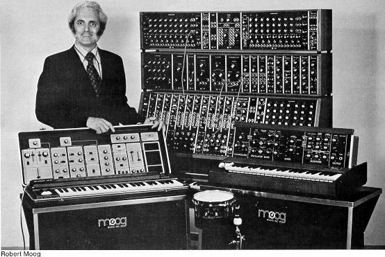
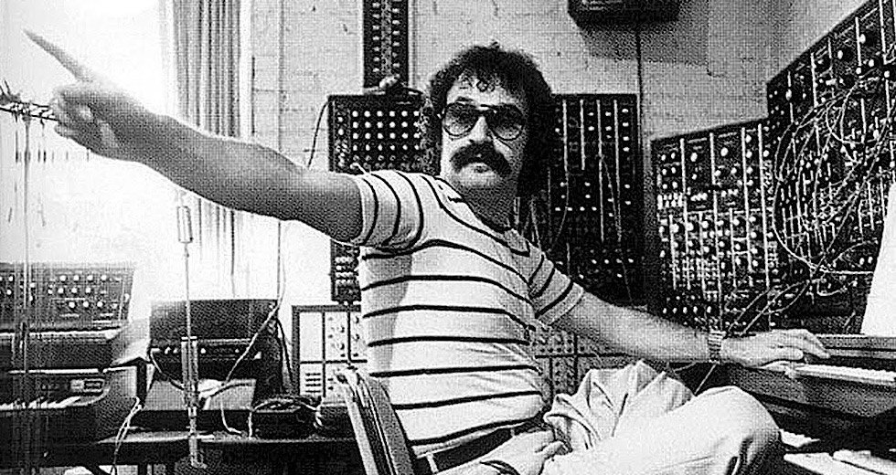
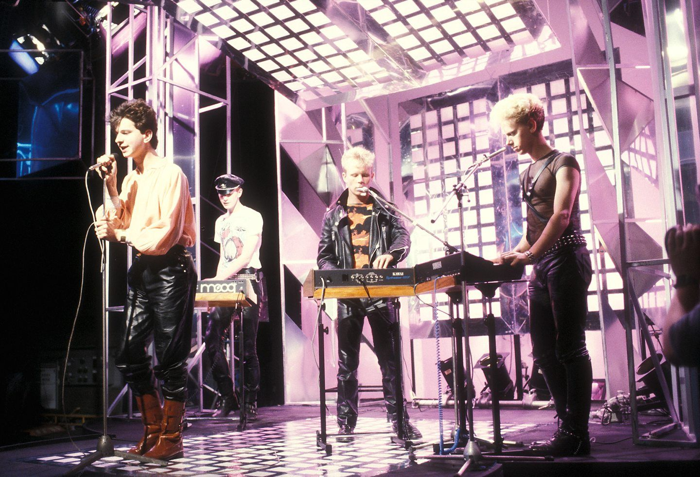
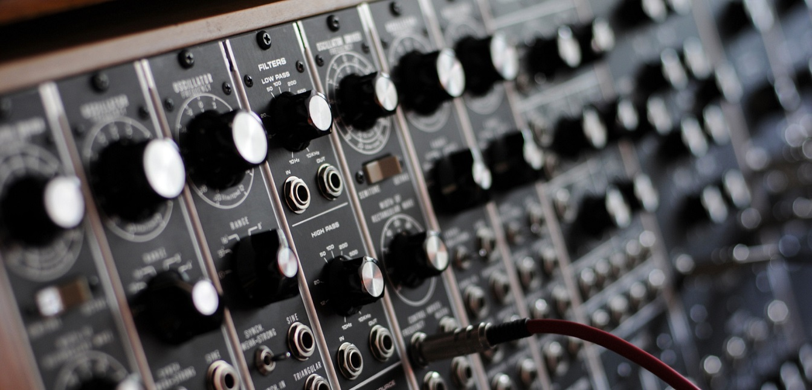

BREVE HISTORIA DE LA MUSICA ELECTRONICA
Los primeros matices de música electrónica se remontan a los años '60. Aunque se puede considerar que el primer ápice de electrónica se remonta a inicios del siglo XX con el fonoautógrafo, el primer dispositivo capaz de grabar sonido. Pero volviendo a los años sesenta y a la electrónica algo más parecida a como la conocemos ahora, se considera un elemento principal que marcó la tendencia que iba a comenzar el sintetizador Moog. Durante estos años la experimentación fue clave.
Fue en la decada del '70 en donde los sonidos electrónicos cogieron cada vez mas protagonismo, dejando atrás la experimentación anterior. La aparición de Kraftwerk y Jean-Michel Jarre fueron clave para hacer crecer la popularidad de la música electrónica. Cada vez la tendencia crecía más y otros rostros más populares hasta nuestros días como David Bowie, Giorgio Moroder o el grupo Pink Floyd fueron claves en la introducción del género.
Ya en la decada del '80 el sintetizador fue el protagonista de la época. En este año data el nacimiento de subgéneros electrónicos como el house, el techno o el electro. Por otra parte, en la misma sintonía, se encontraba el synthpop viviendo sus años dorados. Éste último se trata de una fusión del pop con toques de electrónica, predecesor del electropop. Aunque, bien es cierto que los años ochenta fueron unos años muy fructíferos para casi todos los géneros. En este marco temporal se encuentran bandas que han sido altamente influyentes en la historia de la música como Pet Shop Boys o Depeche Mode, entre otras muchas. Tal es la influencia musical y la riqueza de esta época que, en un panorama tan marcado por la vanguardia, la mayoría de los artistas y grupos no se pueden enmarcar dentro de un único género musical.
En los '90 el sonido electrónico ya no es una novedad. Muchxs artistas ya han experimentado con este género en años anteriores y ya se encuentra establecido. Tanto es así, que comienzan a nacer nuevos subgéneros dentro de la electrónica y dentro de aquellos que ya habían surgido como el hardstyle o el trance. Es la década en la que la electrónica conquista las pistas de baile. Estos años con han dejado joyas musicales como Pump Up The Jam de Technotronic o Rhythm of the Night de Corona, indudables clásicos de la música electrónica.
Todos y cada uno de los antecedentes de la música electrónica han servido de inspiración para los artistas del género en la actualidad. La música electrónica, un estilo musical relativamente joven al que aún le queda mucho con lo que sorprender, como en los años más recientes ha seguido haciendo con nuevos sonidos como el dubstep.
SOBRE NOSOTRXS
Somos un grupo de personas apasionados por la musica electronica desde sus comienzos, y nos propusimos crear una plataforma para hacerle llegar a la gente la posibilidad de adquirir un instrumento electronico que no solo es eso, si no tambien un pedazo de historia.
